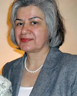

پذيرش > اخبار > 500 نفر از فعالان حقوق زنان، مدنی و سیاسی: منصوره بهکیش را آزاد کنید


 500 نفر از فعالان حقوق زنان، مدنی و سیاسی: منصوره بهکیش را آزاد کنید 500 نفر از فعالان حقوق زنان، مدنی و سیاسی: منصوره بهکیش را آزاد کنید
6 تیر 1390 - - نسخه قابل چاپ
تغییر برای برابری - منصوره بهکیش از حامیان مادران عزادار (مادران پارک لاله) ساعت 8 شب روز یکشنبه 22 خرداد به همراه چند تن دیگر در تقاطع خیابان یوسف آباد و فاطمی تهران شناسایی، دستگیر و پس از انتقال به پلیس امنیت، به عنوان مورد خاص به زندان اوین منتقل شد. وی در آخرین تماس با خانواده اش، اظهار داشته است که در بند 209 زندان اوین نگهداری می شود.
منصوره بهکیش از اعضای خانواده جانباختگان دهه 60 است که 6 برادر و خواهر خود را از دست داده و اکنون تنها عضو خانواده بهکیش است که مسئولیت نگهداری از مادر را در ایران بر عهده دارد.وی در طول سالیان گذشته همواره یار و یاور فعالین اجتماعی و سیاسی بوده و در سال های اخیر نیز به عنوان یکی از اعضای مادران عزادار فعالیت می کرده است.همچنین وی از جمله افرادیست که در سال های گذشته بارها توسط نهادهای امنیتی احضار شده و تحت فشار قرار گرفته است.
اکنون وبا توجه به ارائه نشدن هیچگونه اتهامی نسبت به ایشان و عدم پاسخگویی دستگاه قضایی نسبت به بازداشت وی ، ما جمعی از فعالین حقوق زنان ضمن حمایت از فعالیت های بر حق منصوره بهکیش خواهان آزادی سریع و بی قید و شرط او هستیم.
اسامی :
آزاد مراديان، آ. نظریان، آراز فنی، آرش حسینی، آرش مهدوی، آرش ناجی، آریز اندریاری، آزاد مرادیان، آزاده بامدی ، آزاده بهکیش، آزاده خسروشاهی، آزاده دواچی، آزاده سروری، آزاده فرامرزی ها، آزیتا شعای، آسیه امینی، آناهیتا مرادی، آیدا سعادت، آینده آزاد، احسان امیدی، احمد ایرانی، احمد خانی ، احمد مشعوف، اخبار وکیلی، ادرینا لاوسون، استوار جمشید، اسحاق مسیحی،اسد لاجی، اسماعیل ختائی، اسماعیل ختائی، اشرف میرهاشمی، اعظم حبیبی، اقدس شعبانی، اکبر دوستدار،اکرم پژوهش،اکرم لطفی زاده، اکرم نقابی،
الهه شکرائی، البرز جواهری لنگرودی، النا گنارو، الناز انصاری، الناز دا، الهام شاملو، الهام ملك پور، الهام ملک پور، الهه امانی ، الهه صدر، امجد حسین پناهی، امید کیان، ، امیر حسین بهادری، امیر رشیدی، امیر زندیان، انور میرستاری، انوشه مشعوف، اویس اخوان، ایران ایران دوست ، ایزایل روسی، ایساک مسیحی، بابک جمالی، بالی ایرانی، بانو صابری، برزو فولادوند، بلفی ایرانی، بنیتا پاپاستاسی، بهار فرامرز، بهرام امامی، بهرام پیشگام، بهروز حشمت ، بهروز خليق، بهروز ژاله، بهروز سورن، بهزاد نوحي، بهکام بختیاری، بهمن امینی، بهمن دادگستر، بهمن مباشری، بهناز فرجام، بهناز مهرانی، بونیتا پاپستاتی، بیژن پیرزاده، پاشا تورج،پرتو نوری علا، پرستو فروهر، پروانه رسولی، پرویز زندیان، پروین ابراهیم زاده، پروین اردلان،
پروین ملک، پریسا روشنفکر، پریسا کاکائی، پوران رضاوتی، پویا شاهین، پویا عزیزی، پیمان چهرازی، تارا نجداحمدی، ترانه امین ، توران ناظمی، تورج پاشایی، تونیا ولی اوغلی، ثریا آذر گام ، ثریا فلاح، جسین ماهوتی ها، جهان برجيان، جهان نور مهربخش ، جواد جواهری، حجت نارنجی، حسن زرهی، حسن زهتاب، حسن نایب هاشم، حسین دولت آبادی، حسین رمضانی، حسین صفا، حسین نگین پور، حمید پویه، حمید حمیدی، حمیده نظامی،
حمیلا نیسگیللی، خاطره سلطاني، خدیجه مقدم، خسرو تجربه کار، داریوش مجلسی، داوود نوائيان، دلارام علی، دنا بیگلو، راحله خوشکلام، راضی رضوی، رالف پاپا، رحمان جوانمردی، رزا اتود، رزیتا رجایی، رضا هسه، رضا انزلي، رضا برومند، رضا خلیلی ، رضا زرتشتی، رضا فانی یزدی، رضا کریمی، رضا هیوا، رها عسگری زاده، روجا بندری، روحی شفیعی،روشنک آسترکی، روناک ایازی، رويا ديناروند، رویا کاشفی، زری عرفانی، زرین شقاقی، زهرا اعرابی، زهراابراهیمی ، زهره صادقی، زهره محمدی، زینب پیغمبرزاده، ژیلا گلعنبر، ساحل سیستانی، سارا اسمی زاده، سارا امیرمافی، سارا خاستو، سارا زندیان، سارا محمدی، سازا پارسا،
ساعد فتاحی، ساغر ستاره، ساناز صادقی، سپیده فارسی، ستاره خورشید ، ستاره عباسی، سحر صادقی ، سرور صاحبی، سعید پورحیدر، سعیده شفیعی، سلماز مقدم، سلمان سیما، سمیه رشیدی، سهيلا ليندهورست، سهیلا ستاری، سهیلا شبرگ، سوسن طهماسبی، سوفیا صدیق پور، سیاووش جلیلی، سیدکاظم علوی، سیروس ملکوتی،
سیلوی سویگنی، سیما بختیاری، سیما حدادی، سیما حسین زاده، سیمین نصیری ، سیمین نوروزی، سینا زرتشتی، سینا غیور، شادي امين، شادی صدر، شاهین انزلی، شری فرامرزی، شریفه بنی هاشمی، شریل الکساندر، شرین اسفندارمذ، شعله آتش، شعله شاهرخی، شقایق کمالی، شکوفه هروی، شهاب جوانبخت، شهاب فیضی، شهرزاد هادیان، شهرنوش پارسی پور، شهره احسان، شهروز ایازی، شهریار پویان راد، شهزاد حسینی، شهلا انتصاری،
شهلا بهاردوست، شهلا شفیق، شهلا صادقی، شهلا عبقری، شهلا فرید، شهلا فیضی، شهلا مسافر، شهین زندیان،شهین مهاجر، شهین نوایی ، شيوا محبوبى، شیرزاد کلهری، شیرین اردلان، شیرین ثابت ، شیرین دخت دقیقیان، شیرین عبادی، شیرین عمادی ، شیرین فامیلی، شیرین مقدم ، شیوا بدیهی نژاد، شیوا نوجو، صابر احمدیان ، صادق کمالی، صبا منصوری، صبری نجفی، صبور رهبر، صدیقه شفیعی، صدیقه فخرآبادی، صدیقه مقدم، طاهره پژوهش، طاهره سوری، طلا خوشکلام، طلعت ابراهیمی، عباس بختیاری، عباس شیرازی، عسگر اهنین، عسل اخوان، عسل پیرزاده، عسل کیانی، عشا مومنی، عطا هودشتیان، عطارد کاویان، علي نيكو، علی صدارت، علی فروزنده، علی اشرفی، علی اكبر مهدی، علی اکبر خسروشاهی، علی پاک نیا، علی پاکنژاد، علی حجت،علی رضا خاتمی، علی ستاری، علی صالحی، علی صمد پوری، علی طایفی، علی عبدی، علیرضا خانبخشی، غلامحسین عسگری، فائزه منزوی، فاطمه خانی، فاطمه دانشگر، فاطمه رضایی، فاطمه مقدم، فانوس کریمی،
فاید اشکان، فرامرز نوروزی، فرانک آیینی، فرانک قربان اشرفی، فرح طاهری، فرحروز رنجبر، فرحناز بني اسد، فرحناز محمدی، فرزاد مرشد ، فرزانه ايل بيگي، فرزانه بایزن، فرزانه سوری، فرزانه عظیمی، فرزوان عاملی، فرشته داوریان، فرشته فراهانی، فرشته قاضی، فرشيد بهزاد، فرشید فاریابی، فرشید یاسائی، فرهاد دفتری، فروغ جواهری، فروغ سمیع نیا، فروهر همایون، فریاد صبا، فریبا داوردی مهاجر، فریبا رهبران، فریبا مرزبان ، فریده رستمی، فهمیه گوهر، فیروزه مهاجر، كيوان مهجور، کارن صدر، کاظم علمداری، کاظم فخاران، کاظم کردوانی، کامران مهرپور، کاموس معتضد کیوانی، کامیار بهرنگ، کاوه رضائی شیراز، کاوه کرمانشاهی، کتایون شیبانی، کتایون عظیم فرد، کریس کروستاف ، کریم شامبیاتی، کمال ارس، کورش امجدی، کوروش ایرانی، کوروش یکتا، کیانوش سنجری، گرجی مرزبان، گلاله بهرامی، گلاله سمیعی، گلرخ جهانگیری، گلرخ کیان، گلناز غبرایی لنگرودی ، گلی ابراهیمی، گیتی شریفی ، لاله رخی، لطیفه حسین زاده، ليلا سيف اللهي، لیلا اصلانی، لیلا سرواری، لیلا سیف الهی، لیلا کاوه، لیلا مجتهدی، لیلا مرادی ، مارتا گونتیر، ماريون باستين، مازیار صیرفی، ماندانا راستی، ماينهارد زايفرت، مجتی روهانده ، مجید ابراهیمی، محسن زندیان، محمد آبدربند، محمد افراسیابی، محمد امین زاده، محمد انوشه، محمد برزنجه، محمد تقی سیداحمدی، محمد حسین یحیایی،
محمد رضا رقابی، محمد صدیفی، محمد مباشری، محمد نجف زاده، محمد نجفی، محمود حواری نسب، مرتضی زندیان، مرسده محسنی، مريم زندي، مریم ایرانی، مریم پژوهش، مریم حسین خواه، مریم حکمت شعار، مریم رحمانی، مریم رضایی، مریم فاطمی، مریم محسنی، مریم نایب یزدی، مژگان تات، مژگان ثروتی، مسعود جابانی، مسعود رادفر، مسعود شب افروز، مسعود صدیق پور، مسعود فتحی، مصطفی خسروی، مصطفی مرید ، مظفر ادب، ملیحه محمدی، ملیحه وزیری، منچهر راست، منصوره شجاعی، منوچهر شافعی، منوچهر فاضل، منیر هاشمی، منیره برادران، منیژه حاجی، منیژه شکوهی تبریزی، مهدی امین، مهدی خانباباتهرانی، مهدی ساعدی ور، مهدی کاظمیان، مهدی مهدوی آزاد، مهرانگيز دابوئي، مهرداد درویش پور، مهرداد فرد، مهناز هدایتی ، مهین افشار، مونا شمس، ميلا مسافر، میترا آذری، میتراابراهیمی، میثاق پارسا، مینا لبادی، مینا محبوبی، مینا نیک، میهن روستا، نادر هادی، نادرساده، ناهید جعفری، ناهید سرشگی، ناهید قاجار، ناهید میرحاج، ناهید نصرت، نرگس طیبات، نرگس کرمانشاهی، نسترن ارزش، نسترن وزیری، نسرين بصيري، نسرین الماسی،
نسرین حمیدی، نسرین نخشب، نگوین بنک، نوشین کشاورزنیا، نوید آهنگر، نوید زمانی، نوید محبی، نیره توحیدی، نیکزاد زنگنه، نیما مشعوف ، نینا آهنگر، نینا حجازی، هادی جواهری لنگرودی ، هانا دارابی، هایده تابش، هایده ترابی، هایده دراگاهی، هدا امینیان، هما بدیهیان، هما مداح، هما مرادی، هما هادیان ، هنگامه هویدا، هوشنگ دينارونذ، وجیه الله محمد قاسمی ، وجیهه مقدم، ویدا فرهودی، یادی قربانی ، یاسیمن ماتر، یاور خسروشاهی،
یوان کاوه، یوحنا نجدی، یوسف عزیزی بنی طرف، یوسف میرزائی، یولی وساندن،
ارسال به
بالاترین
،
توییتر
،
فریندفید
،
فیسبوک
در همين بخش :
 پروین ذبیحی برنده جایزه حقوق بشری سازمان غيردولتى اتريشى سودويند شد پروین ذبیحی برنده جایزه حقوق بشری سازمان غيردولتى اتريشى سودويند شد
پخش کارت پستال و بروشور در روز جهانی زن در تهران
تمدید زمان برای امضای بیانیهی جمعی از فعالان زن به مناسبت هشت مارس
مجوزی که در نطفه خفه شد
بیش از 2000 امضا در اعتراض به تبعیض های آموزشی به مجلس تحویل داده شد
ديگر بخش ها :
طرح یک میلیون امضا
|
مقالات
|
سایت نوشته ها
|
اخبار
|
گزارش كمپين
|
گفت و گو
|
علیه سکوت
|
كوچه به كوچه
|
نامه های شما
|
گزارش ویژه
|
گفتگو با اعضا
|
ویژه سالگرد کمپین
|
تصویر برابری
|
دل آرام علی
|
تریبون
|
مقالات
|
تاریخ شفاهی
|
خارج از چارچوب
|
کتابخانه
|
درباره کمپین
|
کمپین در شهرها
|
کمپین در بند
|
صدای تغییر
|
ویژه 22 خرداد
|
لایحه حمایت از خانواده
|
گالری
|
عشا مومنی
|
امیر یعقوبعلی
|
خدیجه مقدم
|
راحله عسگری زاده و نسیم خسروی
|
پروین اردلان،جلوه جواهری، مریم حسین خواه، ناهید کشاورز
|
زینب پیغمبرزاده
|
سعیده امین، سارا ایمانیان، محبوبه حسین زاده، ناهید کشاورز و همایون نامی
|
احترام شادفر
|
نسیم سرابندی زاده،فاطمه دهدشتی
|
وبلاگ مهمان
|
پرونده خرم آباد
|
دستگیری ها
|
مریم مالک
|
پرستو اللهیاری
|
مهرنوش اعتمادی
|
سمیه رشیدی
|
Other Languages
|
همراهان
|
«فراخوان کمپین ده روز با بهاره هدایت»
| English
|